Lock
SCR-LOCK-001·002·003·004 · 状態照会 · 適用 · 電子署名 · 解除 · 履歴
Lock 状態照会
- 1.1画面構成
- 1.2Lock 状態の概要
- 1.3被験者一覧と行アクション
1.1画面構成
概要
入力が完了したデータをそれ以上変更されないようにロックし、何がロックされているかを一目で確認する画面です。ロックは被験者単位とプロジェクト全体の2つの階層で設定でき、適用・解除はどちらも理由を残し、電子署名で確定します。画面は上からプロジェクトのロック → 集計 → フィルター → 被験者一覧の順に並んでいます。
画面説明
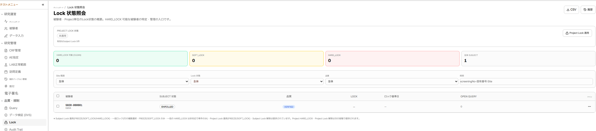
「CSV」 — 今見ている被験者のLock一覧をファイルでダウンロードします。
「履歴」 — ロック・解除の記録をまとめて確認する画面に移動します 4.1。その画面に行く経路はこのボタンだけです。
「Project Lock 適用」 — プロジェクト全体を一括でロックします 2.4。データ管理者にだけ表示されます。
画面のサブタイトルが、この画面の役割を示しています — 「被験者・Project単位のLock状態の概要。HARD_LOCK可能な被験者の特定・管理の入口。」
Project Lock 状態 — プロジェクト全体のロックの有無と、有効な被験者ロックの件数 1.2。
集計4種 — ロックの状況を数字でまとめます 1.2。
フィルター4種 — 参加施設 · Lock 状態 · 品質 · 検索。検索はスクリーニング番号 · 固有番号 · 施設コードで探します。
被験者一覧 — 被験者ごとのロック状態とアクション 1.3。
下部の案内 — 現在提供している機能の範囲を書いておいた行です (下の注意事項)。
左側メニューの「品質・規制 > Lock」が、この画面の位置です。
アクセス経路
- • 左側メニューの「品質・規制 > Lock」 — プロジェクトに入ったあとにだけ表示されます。
- • プロジェクトダッシュボード > 「Lock 現況」ウィジェットの「Lock 管理 →」
- • プロジェクトダッシュボード > 「データ品質」ウィジェットの「被験者の品質・Lock一覧」 — 品質を見ているところからロックの画面へ移る経路です。
注意事項
必須確認 データ破損 · フォーム完了不可
- • 下部の案内行の最後の文は、現在の画面と合っていません。「Project HARD_LOCK・Project Lock 解除は次の段階で提供されます」と書かれていますが、プロジェクトのロック解除はすでに提供されています — プロジェクトがロックされた状態では、同じ位置に「Project Lock 解除」ボタンが表示されます。案内文だけが以前のまま残っているもので、プロジェクト全体を HARD_LOCK でロックすることがまだ提供されていない部分は正しい内容です。
1.2Lock 状態の概要
概要
一覧を1件ずつ数える前に、このプロジェクトがどこまでロックされているかを示す領域です。いちばん上のカードがプロジェクト全体のロックで、その下の4つの欄が被験者単位の集計です。集計はフィルターに関係なく被験者全体を基準に数えます — フィルターをかけてもこの数字は変わりません。
画面説明
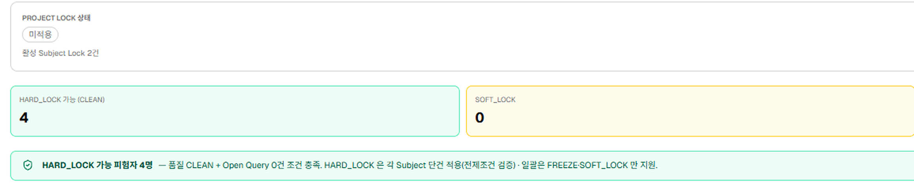
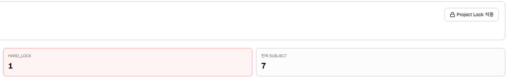
「Project Lock 適用」 — プロジェクト全体をロックします 2.4。すでにロックされている場合は、同じ位置が「Project Lock 解除」に変わります。
プロジェクトのロック状態 — キャプチャは「未適用」です。ロックされている場合は、その位置にロック種類のバッジと適用日が表示されます。
有効なSubject Lock件数 — 現在ロックされている被験者の数です。プロジェクトがロックされている場合は、「Project Lock 適用中 — 下位のSubject Lockの単独解除をブロック」も一緒に表示されます (1.3 の注意事項を参照)。
HARD_LOCK 可能 (CLEAN) — 品質がCLEANで、まだロックされていない被験者の数です。VERIFIEDはここに含まれません。
SOFT_LOCK — データ整理の段階でロックされた被験者の数。
案内バナー — 「HARD_LOCK 可能な被験者 4名 — 品質 CLEAN + Open Query 0件の条件を満たしています。HARD_LOCK は各Subjectに単件で適用（前提条件の検証あり）・一括はFREEZE・SOFT_LOCKのみ対応しています。」 可能な被験者が1人もいない場合、このバナーは表示されません。
HARD_LOCK — 完全にロックされた被験者の数。
全体Subject — プロジェクトの被験者の総数です。前の3つの数字の合計とは一致しません — ロックされておらず、品質もCLEANではない被験者は、どこにも数えられないためです。
ロック種類3種
| ロック種類 | 何がブロックされるか | 使うとき |
|---|---|---|
| FREEZE | データ変更とQueryへの回答をブロック。原資料照合(SDV)は許可 | 検討中に一時的に固定しておくとき |
| SOFT_LOCK | Queryへの回答に基づく修正のみ許可 | データ整理の段階 · 完全ロックの直前 |
| HARD_LOCK | 完全ロック。被験者単件でのみ適用され、前提条件の検証を通過が必要 | データを確定するとき |
注意事項
誤解しやすい動作
- • 「HARD_LOCK 可能」は、品質がCLEANの被験者だけを数えます。品質がVERIFIEDの被験者は、原資料照合までは終わっていても、この数字には含まれず、一覧のLock列にも「HARD 可能」バッジは付きません。ロックの準備ができているように見えるのに数字が0の場合は、先に品質の列を確認してください。
1.3被験者一覧と行アクション
概要
被験者1人が1行です。ロックできる状態かどうかは、品質 · Lock · Open Queryの3つの列をあわせて見ると分かります — 品質がCLEANで、開いているQueryがなければ完全ロックが可能です。実際の操作は行の右側にある ⋯ メニューから始めます。
画面説明
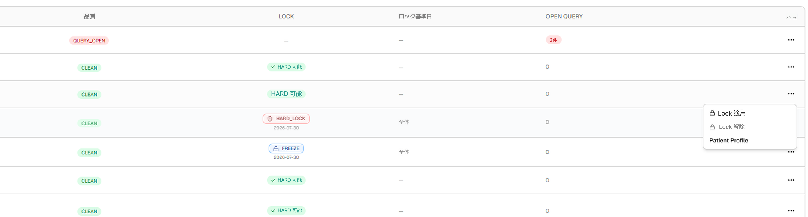
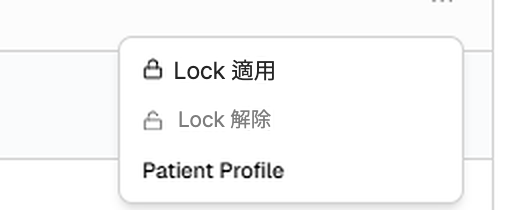
⋯ — その被験者のアクションメニューを開きます。
「Lock 適用」 — ロックダイアログを開きます 2.2。すでにHARD_LOCKの行では無効です — 完全にロックした後は、別のロックを重ねることはできません。
「Lock 解除」 — 解除ダイアログを開きます 3.1。ロックされていない行か、プロジェクト全体がロックされている状態の場合は無効です (下の注意事項)。
「Patient Profile」 — その被験者の統合画面に移動します。ロックする前に内容を確認するときに使います。
表は8列です — 選択 · 被験者 · Subject状態 · 品質 · Lock · ロック基準日 · Open Query · アクション。先頭の選択列はデータ管理者にだけ表示されます 2.1。
品質 — CLEAN · VERIFIED · PENDING · QUERY_ANSWERED · QUERY_OPEN のいずれか。キャプチャの先頭の行はQUERY_OPENのため、ロックできません。
Lock — ロックされていれば種類バッジと適用日、ロックできる場合は緑の「HARD 可能」、どちらでもなければ「—」です。
ロック基準日 — 「全体」は全データをロックしたことを、日付と「部分」バッジが表示されている場合は、その日付までだけロックしたことを示します 2.2。ロックされていない行は「—」です。
Open Query — 開いている問い合わせの件数です。0 でなければ完全ロックはできません。
注意事項
必須確認 データ破損 · フォーム完了不可
- • プロジェクト全体がロックされている場合、被験者1人だけを個別に解除することはできません。その場合は行メニューの「Lock 解除」が押せず、「Project Lock 解除を先に」という案内が付きます。解除ダイアログが開いた場合でも、「上位のProject Lockが適用中です。Subject Lockを解除するには、先にProject Lockを解除する必要があります。」と表示されて止められます — プロジェクトのロックを先に解除してから、もう一度お試しください。
Lock 適用
- 2.1対象の指定
- 2.2Lock適用ダイアログ
- 2.3電子署名
- 2.4Project全体のロック
2.1対象の指定
概要
複数の被験者を一度にロックするときの流れです。行の左側の四角にチェックを入れると、一覧の上に青い帯が表示され、そこから直接一括ロックを始めます。1人だけをロックする場合は、チェックせずその行の ⋯ > 「Lock 適用」を使ってください 1.3。完全ロック(HARD_LOCK)は、その経路からだけ進めます。
画面説明
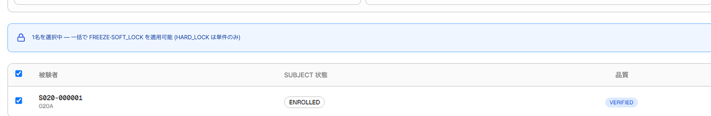
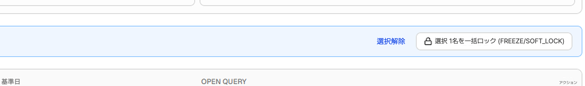
行の選択 — ロックする被験者にチェックを入れます。チェックした数だけ、上の帯の数字が変わります。
「選択解除」 — チェックをすべて外します。
「選択 N名を一括ロック (FREEZE/SOFT_LOCK)」 — ロックダイアログを開きます 2.2。ボタン名が示すとおり、一括では2種類だけ選べます。
帯の文言が、その制約をもう一度示しています — 「1名選択中 — 一括でFREEZE・SOFT_LOCKを適用可能 (HARD_LOCKは単件)」。
見出しの四角は、今かかっているフィルターに該当する行全体を一度にチェックします。フィルターで絞り込んでからここを押すのが安全です。
注意事項
誤解しやすい動作
- • 選択列と一括ロックは、データ管理者にだけ表示されます。研究責任者の画面にはチェック列そのものがないため、この流れを始められません — 1人ずつ ⋯ > 「Lock 適用」でロックする必要があります。表示されないのは故障ではなく、権限による正常な動作です。同じ理由で「Project Lock 適用」もデータ管理者専用です。
2.2Lock適用ダイアログ
概要
どのロックを、なぜ、どこまでかけるかを決めるダイアログです。4項目を入力すると電子署名の段階に進み、署名を終えてはじめてロックが確定します 2.3。ダイアログ最上部のサブタイトルに今回ロックする対象の件数が表示されるので、見当違いの範囲をロックしないよう、先に確認してください。
画面説明

① Lock 種類 — キャプチャではSOFT_LOCKを選んだ状態です。選んだ欄に色が付きます。一括ロックではFREEZE · SOFT_LOCKの2つだけが表示されます。
② 理由の区分 — 必ず選ぶ必要があります。一覧は上で選んだLock 種類によって変わります (下の表を参照)。
詳細メモ — 適用の背景を書きます。ラベルには「選択」と書かれていますが、実際には入力しないと進めません (下の注意事項)。
特定の基準日までのデータだけをロック — チェックしないと全体のデータをロックします。
チェックすると日付の入力欄が表示されます。基準日当日に作成されたデータも含めてロックします — 画面の文言「当日を含む」がその意味です。
「電子署名で進む」 — 署名の段階に進みます 2.3。まだロックされたわけではありません。
対象 — キャプチャでは「選択 1名 一括」で、ダイアログのタイトルの下に「複数の被験者 · 対象 1件」も一緒に表示されます。
電子署名の案内 — 「次の段階で電子署名パスワードを入力すると、Lockが確定します。」
Lock 種類別の理由の区分
| Lock 種類 | 選べる理由の区分 |
|---|---|
| FREEZE | モニタリング検討 · Interim Lock · 規制対応 · その他 |
| SOFT_LOCK | データ整理の段階 · Interim Lock · 規制対応 · その他 |
| HARD_LOCK | 研究終了 · Interim Lock · 規制対応 · その他 |
注意事項
必須確認 データ破損 · フォーム完了不可
- • 「詳細メモ」は、ラベルには「選択」と書かれていますが、空欄のままでは進めません。3文字以上を入力すると「電子署名で進む」が有効になります。理由の区分まで選んだのにボタンが薄いままの場合は、メモ欄を先に確認してください。(解除ダイアログでは同じ欄が最初から必須 · 5文字以上と表示されます — 3.1 参照。)また、完全ロック(HARD_LOCK)を選ぶと基準日の指定はオフになります — 完全ロックは常に全体ロックです。
2.3電子署名
概要
ロックを確定させる最後の段階です。電子署名は法的効力のある記録のため、誰が・何に・どんな意味で署名したかが一緒に残り、一度残ると消えることはありません。そのため、署名の前に署名の対象が自分の意図した範囲かどうかを必ず確認してください。このダイアログは解除するときも同じように表示されます 3.1。
画面説明
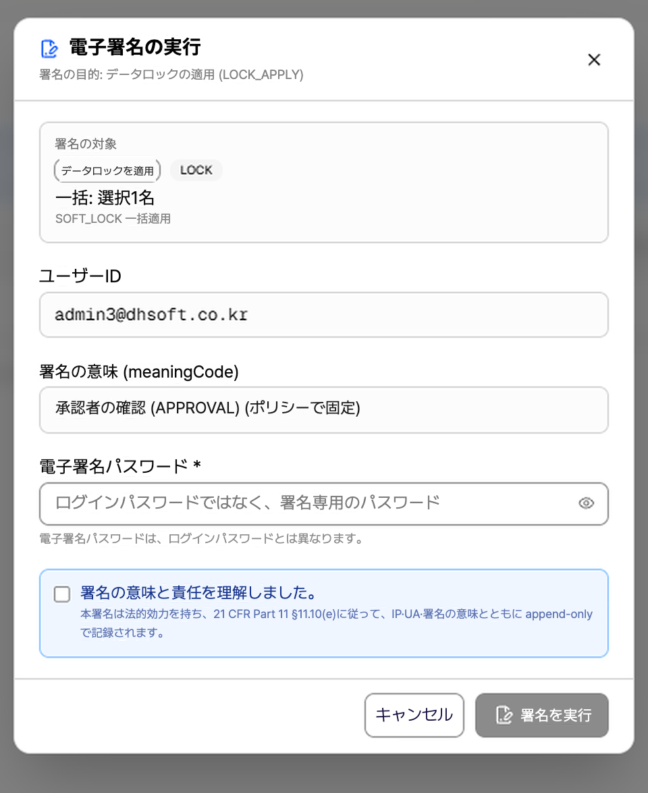
電子署名パスワード — ログインパスワードとは別の署名専用のパスワードです。右側の目のアイコンを押すと、入力した値を確認できます。
「署名の意味と責任を理解しました」 — チェックしないと署名を実行できません。
「署名を実行」 — 署名が記録され、ロックが確定します。
署名の目的 — 何に署名するかがタイトルの下に表示されます。キャプチャはデータのロック適用です。
署名の対象 — 「選択 1名 一括 / SOFT_LOCK 一括適用」のように、範囲と種類がもう一度表示されます。ここが最後の確認ポイントです。
ユーザーID — 今ログインしているアカウントです。他の人の代わりに署名することはできません。
署名の意味 — 承認者の確認に固定されており、ユーザーは変更できません。
案内 — 「電子署名パスワードは、ログインパスワードとは異なります。」
注意事項
必須確認 データ破損 · フォーム完了不可
- • 署名は取り消せず、記録が残ります。チェック欄の横の説明がその点を示しています — 「本署名は法的効力を持ち、21 CFR Part 11 §11.10(e)に基づき、IP・UA・署名の意味とともにappend-onlyで記録されます。」 つまり、接続情報も一緒に保存され、その記録は削除も修正もできません。誤ってロックした場合、元に戻す方法は解除を改めて署名して実行することだけで、その解除も履歴に残ります 3.1 · 4.1。
2.4Project全体のロック
概要
プロジェクト全体を一度にロックするダイアログです。入力項目は被験者ロックと同じですが、影響の範囲が異なります — 下位の被験者全員が一緒にロックされ、その後は被験者1人だけを個別に解除することはできません (1.3 の注意事項を参照)。キャプチャはまだ何も選んでいない最初に開いた状態です。
画面説明
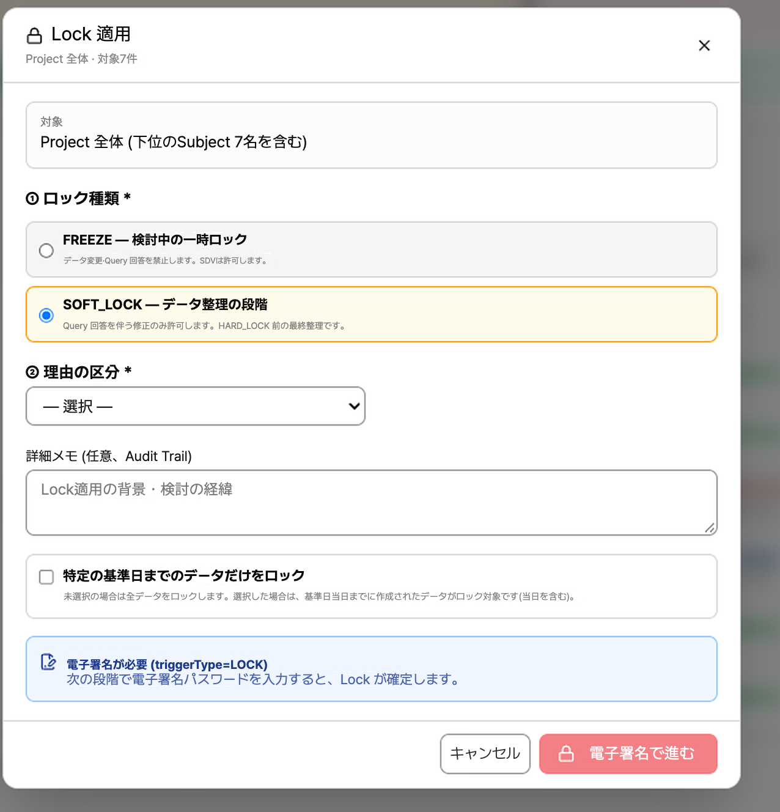
② 理由の区分 — 最初は「— 選択 —」です。必ず選ぶ必要があります。
選ぶまでは「電子署名で進む」が薄い状態のままで、押せません — キャプチャがその状態です。詳細メモまで入力すると有効になります (2.2 の注意事項を参照)。
ダイアログのタイトルの下に対象件数が表示されます — キャプチャでは「Project全体 · 対象 7件」。
対象 — 「Project全体 (下位のSubject 7名を含む)」。この行の数字が、実際にロックされる被験者の数です。
Lock 種類は2つだけです — FREEZE · SOFT_LOCK。プロジェクト全体を完全ロック(HARD_LOCK)でかける機能は、まだ提供されていません。
詳細メモ — 案内文に何を書けばよいかが示されます (「Lock適用の背景・検討の経緯」)。
基準日の指定は、プロジェクトのロックでも使えます — チェックしないと全体のデータをロックします。
電子署名の案内 — 次の段階は被験者ロックと同じです 2.3。
注意事項
必須確認 データ破損 · フォーム完了不可
- • プロジェクト全体をロックすると、被験者単位での解除ができなくなります。ロックした後は、一覧の行メニューにある「Lock 解除」がすべて無効になり、1人を解除するには先にプロジェクトのロックを解除する必要があります。一部の被験者だけ整理が終わった段階であれば、プロジェクト全体ではなく、一括ロック 2.1で、その被験者だけにかけるほうが、後で元に戻しやすくなります。
Lock 解除
- 3.1解除ダイアログ
3.1解除ダイアログ
概要
ロックを解除するダイアログです。上部には今かかっているロックの内容が先に表示され、その下に解除する理由を書きます。適用と同様に、電子署名を終えてはじめて解除が確定します 2.3。解除理由の一覧は適用理由とは別の一覧で、プロジェクト設定のコード管理で管理されます。
画面説明
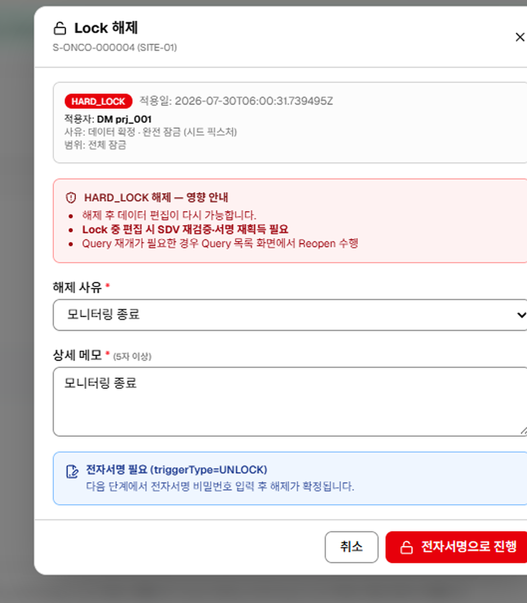
解除理由 — 必ず選ぶ必要があります。モニタリング終了 · 追加修正の必要あり · Lock適用の誤り訂正 · プロトコル変更 · 監査対応 · その他などが用意されています。
詳細メモ — 必須で、5文字以上です。ラベルにもそのように書かれています。
「電子署名で進む」 — 署名の段階に進みます 2.3。
現在のロック種類と適用日 — 行の左端の赤いバッジが今かかっているロック種類で(キャプチャでは HARD_LOCK)、その右側が適用時刻です。この時刻は韓国時間ではなく協定世界時です(末尾の Z がその表示)。韓国時間として読むには9時間を足して読んでください (4.1 の注意事項を参照)。
適用者 · 理由 · 範囲 — 誰が何の理由でロックしたか、全体ロックか部分ロックかが表示されます。キャプチャでは「範囲: 全体ロック」です。
影響の案内 — 完全ロックを解除するときだけ表示される赤い囲みです。解除後はデータの編集が再び可能になり、編集すると原資料照合と電子署名を改めて受ける必要があり、問い合わせを再開するにはQuery画面で再問い合わせを行う必要があると案内します。
電子署名の案内 — 「次の段階で電子署名パスワードを入力すると、解除が確定します。」
注意事項
必須確認 データ破損 · フォーム完了不可
- • 完全ロックを解除することは、確定したデータを開き直すことです。画面の赤い案内が、その代償をそのまま書いています — ロック中の状態が解除されるため、原資料照合(SDV)と電子署名を改めて受ける必要があり、その間のすべての変更が履歴に残ります。解除が本当に必要か、解除の代わりにQuery(問い合わせ)で対応できないかをまず検討し、解除する場合は詳細メモに今後の対応計画まで書いておいてください。
Lock 履歴
- 4.1履歴の照会
4.1履歴の照会
概要
ロックと解除がいつ · 誰によって · なぜ行われたかをまとめて確認する画面です。追記のみ可能なので、一度記録された行は修正も削除もできず、訂正が必要な場合は新しい行が追加されます。そのため、この画面には編集機能がありません。ここに入る経路はLock 状態照会画面の「履歴」ボタンの1つだけです。
画面説明
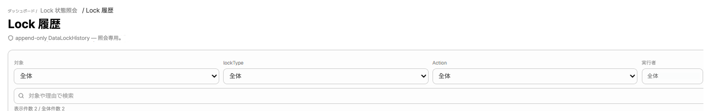
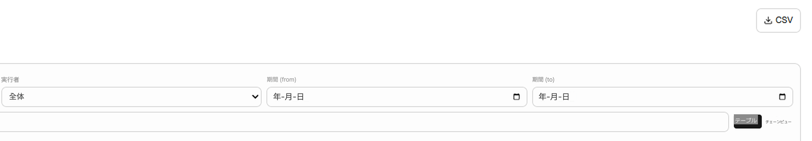
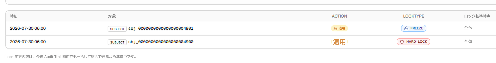
「CSV」 — 現在の条件に合う履歴をファイルでダウンロードします。
検索 — 対象と理由の文言で探します。
「テーブル」 / 「チェーンビュー」 — 表で見るか、対象ごとにまとめて適用 → 解除 → 再適用の順番をつないで見るかを選びます。キャプチャはテーブルです。
サブタイトルがこの画面の性格を示しています — 追記専用 · 照会専用。
フィルター6種 — 対象 · ロック種類 · 作業の種類(適用/解除) · 実行者 · 期間の開始 · 期間の終了。その下の行に表示件数 / 全体件数も一緒に表示されます。
表は8列です — 時刻 · 対象 · 作業 · ロック種類 · ロック基準時点 · 実行者 · 理由 · 署名。末尾の署名列が、その作業に使われた電子署名の記録とつながります。
下部の案内 — 「Lock変更の内容は、今後Audit Trail画面でも統合して照会できるよう準備中です。」と書かれていますが、Audit Trail画面の「Lock」カテゴリーですでに一緒に照会できます。案内文だけが以前のまま残っているものです。
時刻 — キャプチャでは2026-07-30 06:00です (下の注意事項)。
注意事項
必須確認 データ破損 · フォーム完了不可
- • この画面の時刻は韓国時間ではありません — 協定世界時のままです。キャプチャの06:00は韓国時間では同じ日の15:00で、解除ダイアログの「適用日」3.1も同じ方式です。一方、Audit Trail画面は「日時 (KST)」で、プロジェクトダッシュボードのLockウィジェットも韓国時間に変換して表示するため、同じ出来事が画面ごとに9時間ずれて見えます。監査対応の資料に時刻を引用する場合は、どの画面で読んだ値かもあわせて明記し、韓国時間が必要な場合は9時間を足して記載してください。